视频教程
羊肉泡馍制作过程
一、熬汤煮肉（汤是灵魂）
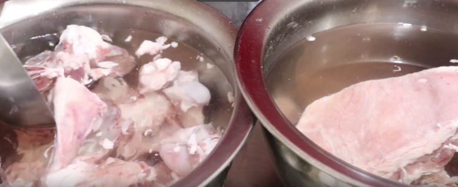
- 食材准备（提前一晚用凉水浸泡）
- 牛骨、羊肉、 注意：提前一晚要用凉水浸泡，勤换水、多搅动，充分泡出血水
- 提示： 羊骨配合牛大骨一起熬，可以增加汤的鲜浓度。
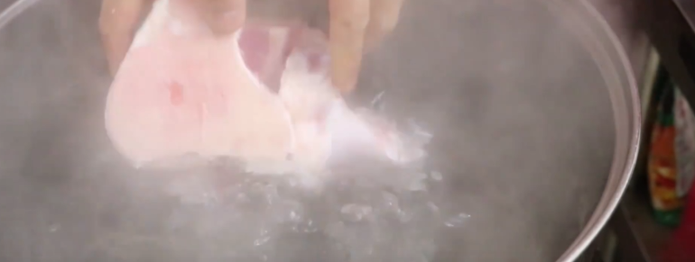
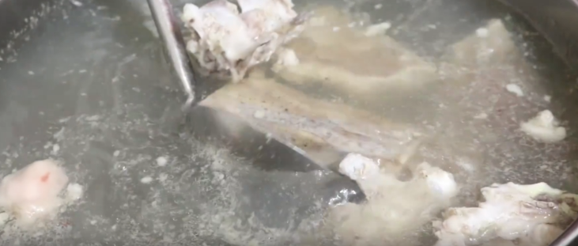
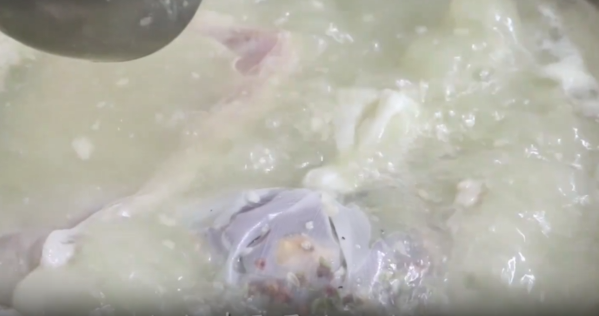
二、熬汤步骤
- 开水下骨头牛骨头、羊骨头直接下开水锅，开大火冲，把残存的血沫煮出来
- 撇去血沫：烧开后把上面浮起的血沫子撇干净
- 补羊油：让汤更肥，煮出来的肉更香
- 先熬汤再下肉：等汤的鲜度提升之后，再下羊肉
- 下肉：下入泡好的羊肉，大火烧开，转小火
- 压上篦子：防止肉和香料包飘起来
- 煮制时间：保持中小火（也叫文火），煮约2小时
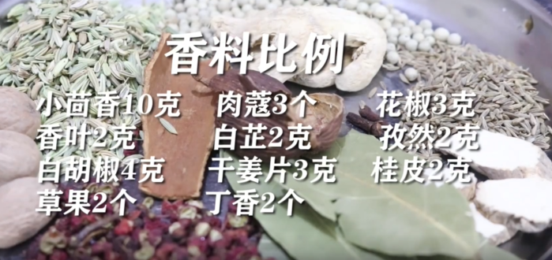
三、香料包
- 小茴香、肉蔻、花椒、香叶、白芷、孜然、白胡椒、干姜片、桂皮、草果（去籽）、丁香（2个）
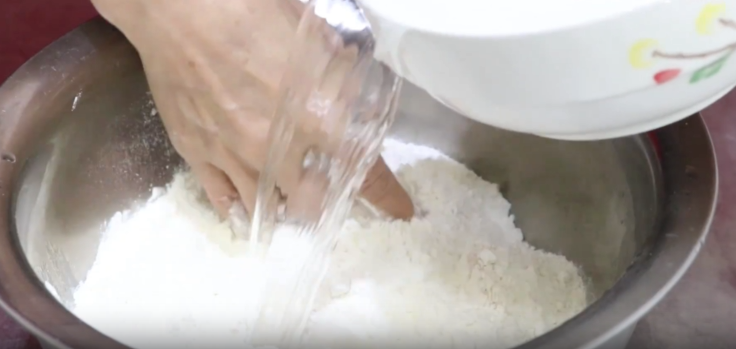
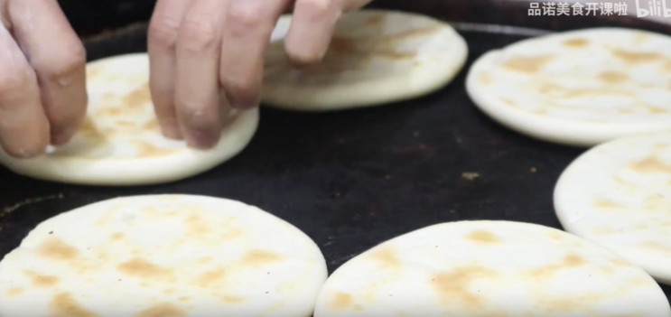
四、泡馍的馍
- 原料：面粉、酵母、盐
- 用量：面粉2斤、酵母1-2克（一点点就够了）、盐5克
- 提示：面粉的选择很重要，最好选用筋度较高的面粉，这样做出来的馍更有嚼劲，口感更好。
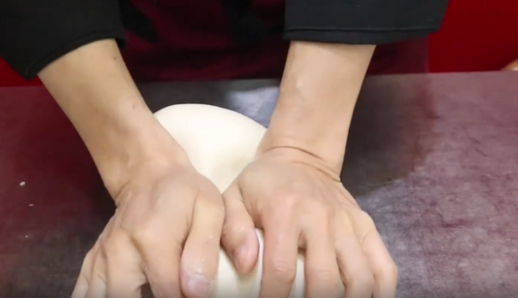
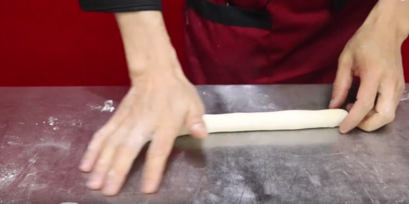
泡馍制作步骤：
- 面粉加酵母、盐，分次加水，边加边搅拌，和成面团揉光
- 封保鲜膜静置5分钟（让面筋卸一卸，不是为了发面）
- 搓开揪面剂（每个2两）
- 搓开、上水、压开、卷起来、压下去
- 擀成圆饼
- 上锅烙，两面上火色后出锅
- 饼子烙到七八成熟即可（等会儿还要掰碎下锅煮）
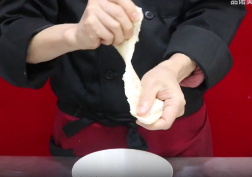
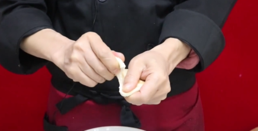
五、掰馍
- 馍一分为二
- 再撕成1/4
- 用指甲掐碎，掰成黄豆大小的小粒
- 掰好的馍粒放入碗中，抖一抖去掉碎渣
- 检查馍粒大小是否均匀，太大不入味，太小没嚼劲
- 等待煮制
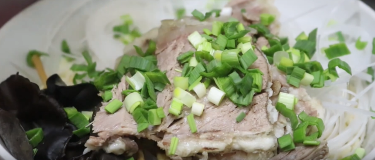
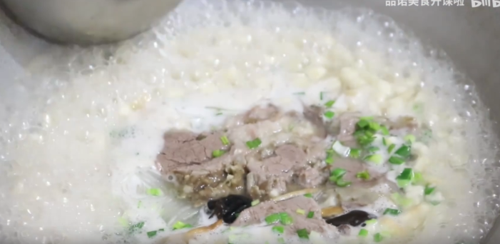
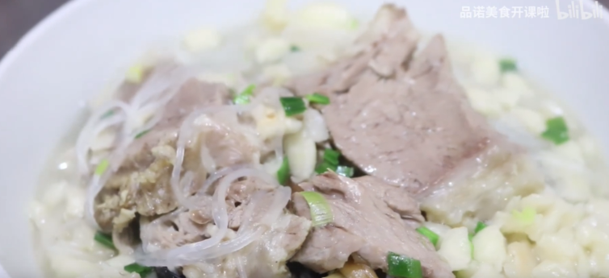
六、煮馍
- 配料:粉丝、黄花、木耳、羊肉、蒜苗
煮制步骤:
- 掰好的馍放上粉丝、黄花、木耳，抓一把蒜苗
- 碗装好后下锅煮馍
- 加入一勺原汤
- 烧开后下馍，把肉煮热
- 端起锅摇一摇，受热均匀，让馍慢慢吸饱汤汁
- 差不多了翻个，给点味精
- 淋上明油（羊油）
- 把肉盖在上面
- ✅完成:一碗热气腾腾的羊肉泡馍，肉烂、馍香、汤醇厚鲜美。